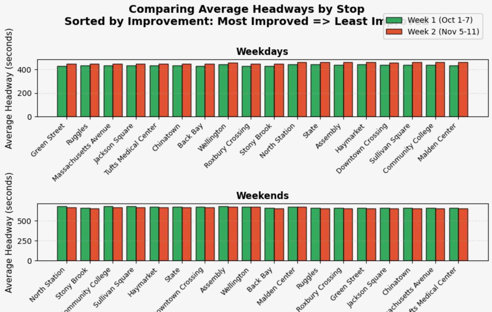

Colin Chu, Alex Ferguson, Anish Sanghi • DS4200 Fall 2025
The month-long Orange Line shutdown in October 2024 replaced 5.2 miles of rail and eliminated virtually all slow zones. Riders immediately noticed faster trips, but by how much exactly? And did reliability improve too?
This project answers those questions using MBTA open data for the week before (Oct 1–7) and the week after (Nov 5–11) the shutdown. We measure:
Grouped bar chart showing average headway at each stop, separated by weekdays/weekends and sorted by greatest improvement (biggest reduction in headway = better frequency/less bunching).
Design rationale: Side-by-side bars allow instant pre/post comparison. Sorting by improvement immediately highlights where service became more even. Separate weekday/weekend panels respect different schedules. Orange = post-shutdown, green = pre-shutdown for intuitive "green = better" reading.
Hover for exact values and % improvement.
Post-shutdown: 9.1% faster on weekdays (3.5 minutes saved), 14.2% faster on weekends (5.3 minutes saved).
Lower = more frequent trains. Hover to see exact values.
Peak-hour frequency is essentially unchanged. Evening and early-morning headways actually worsened slightly after the shutdown.
The 2024 Orange Line shutdown was a clear success on speed: median journey times across the 18-station trunk dropped from ~37.9 minutes to 34.4 minutes on weekdays (–9.1%) and from ~37.7 minutes to 32.4 minutes on weekends (–14.2%).
On reliability and frequency, we saw no meaningful improvement — average headways stayed virtually the same during peaks and actually increased slightly in shoulders/evenings. The track upgrades fixed the physical slow zones but did not address scheduling, operator availability, or bunching issues.
Bottom line: The MBTA now has much faster trains, but still not significantly more reliable trains. Future improvements must focus on operations, not just infrastructure.